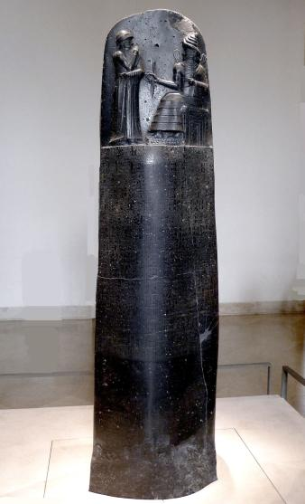
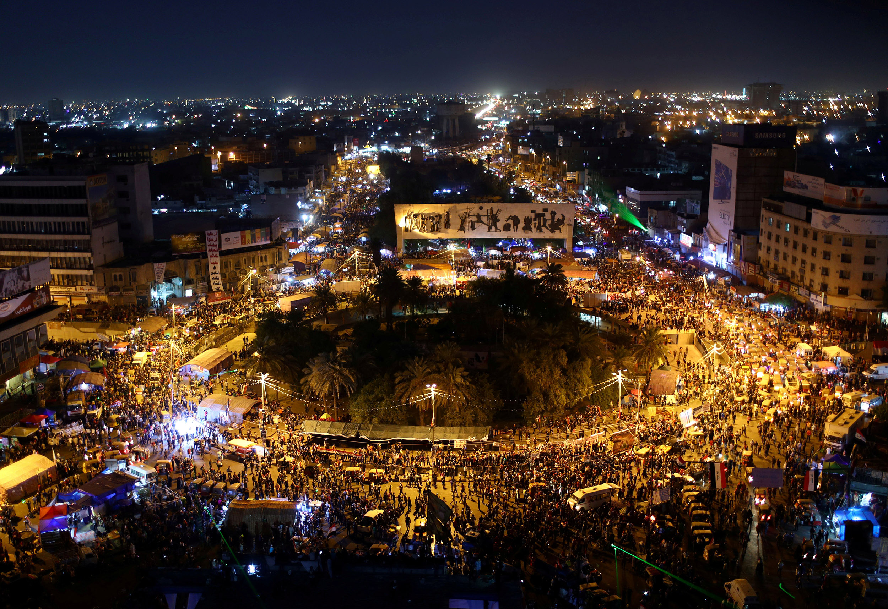
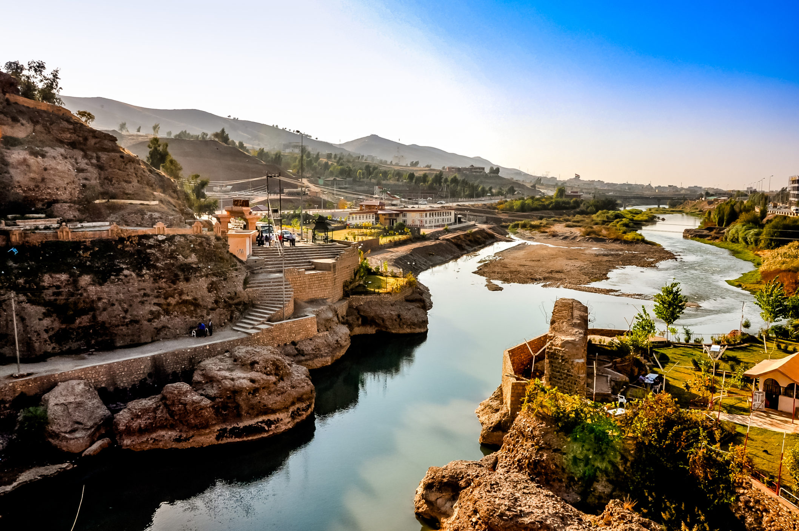
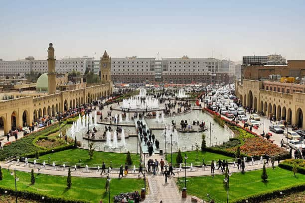
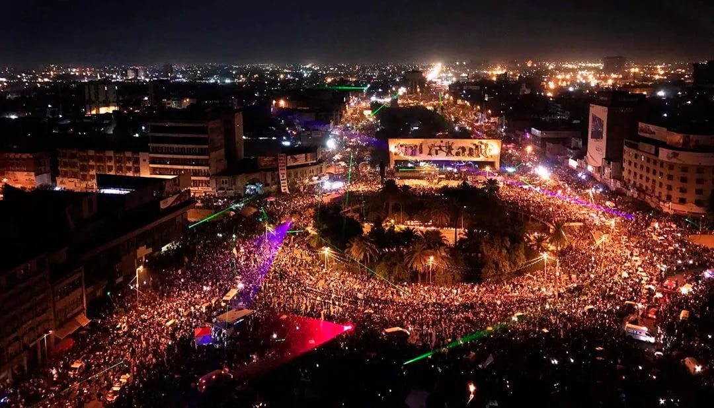
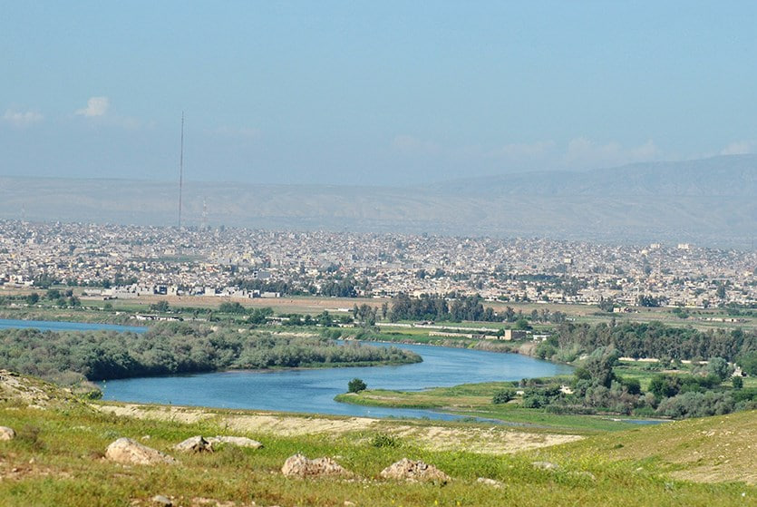
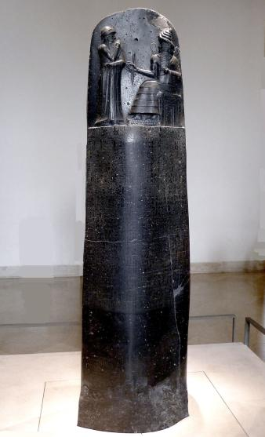
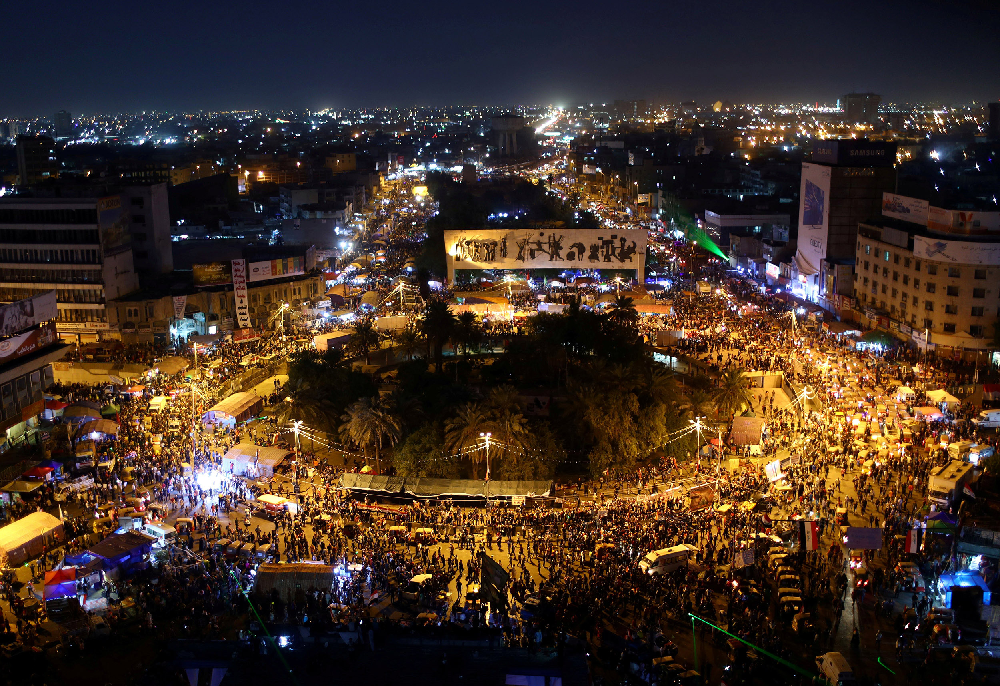
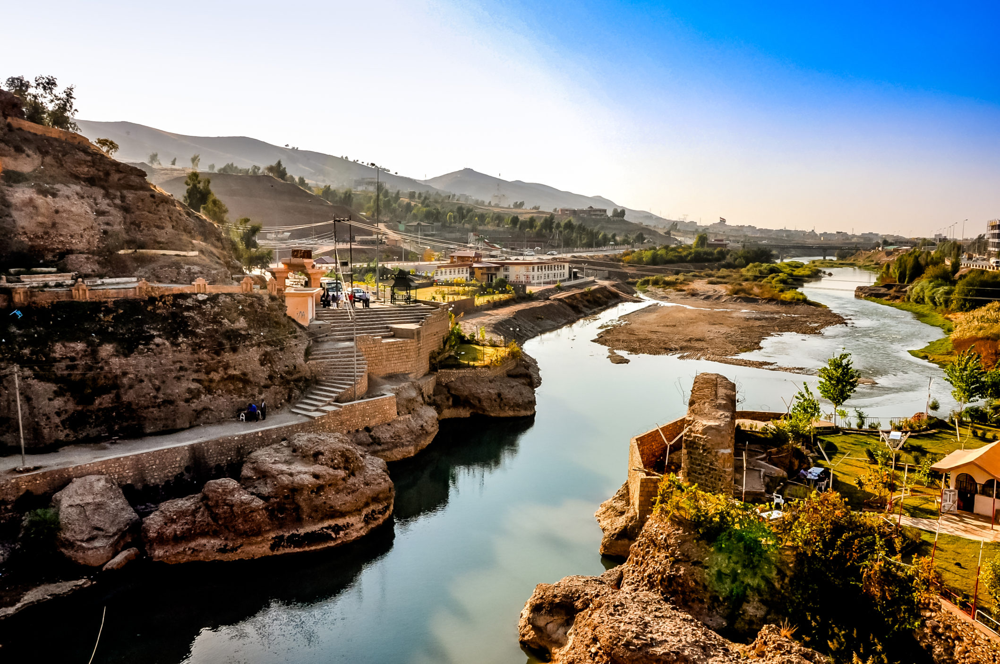
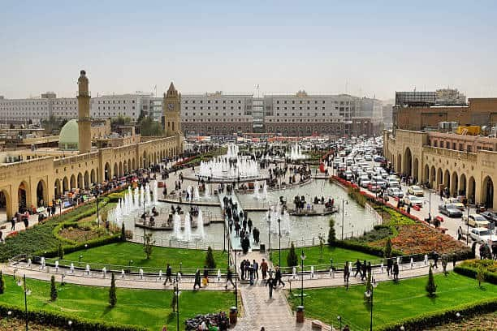
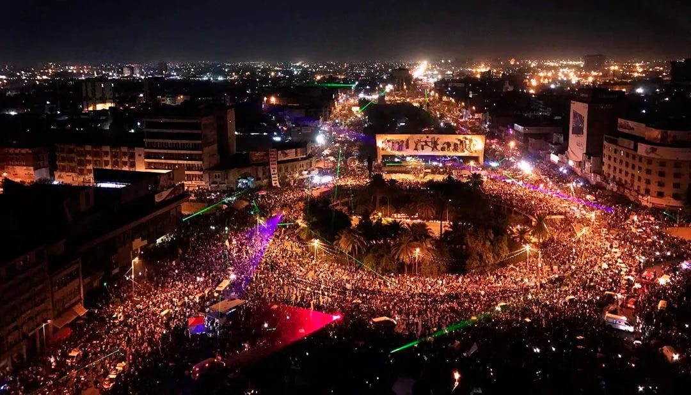
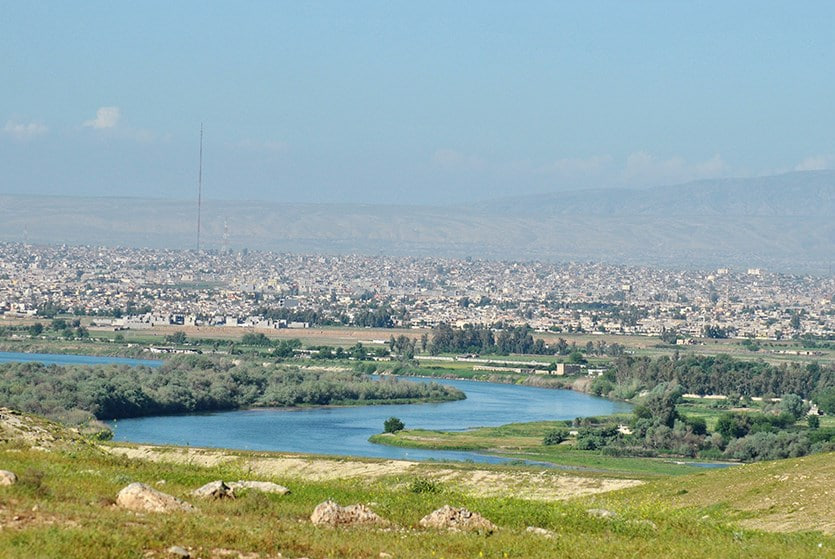
 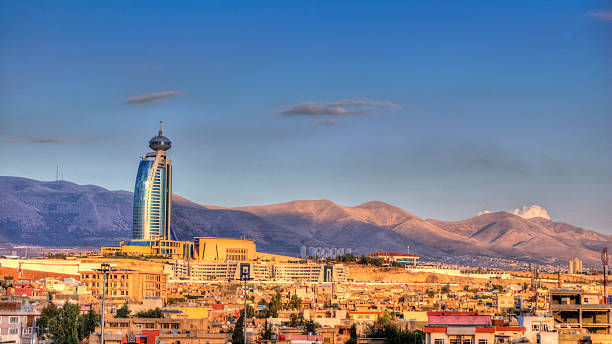
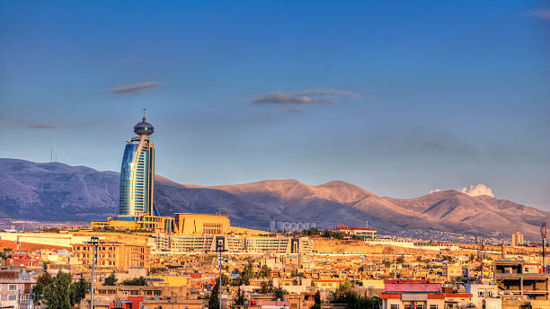

Traditions
Iraq has a rich cultural heritage with various traditions that have been shaped by its history, religion, and diverse ethnic groups. Here are some of the traditions observed in Iraq:
1. Islamic Festivals: As a predominantly Muslim country, Iraq celebrates Islamic festivals such as Eid al-Fitr, which marks the end of Ramadan, the holy month of fasting, and Eid al-Adha, the festival of sacrifice commemorating Prophet Abraham's willingness to sacrifice his son. These festivals involve special prayers, family gatherings, feasts, and the exchange of gifts.
2. Iraqi Cuisine: Iraqi cuisine is renowned for its flavorful dishes and reflects the country's cultural diversity. Traditional Iraqi meals often include dishes like biryani (spiced rice), kebabs, dolma (stuffed vegetables), kubba (stuffed meatballs), and various types of flatbread. Hospitality plays a significant role in Iraqi culture, and offering food and drinks to guests is a common tradition.
3. Traditional Clothing: The traditional attire in Iraq varies among different ethnic and religious groups.
4. Poetry and Literature: Iraq has a rich tradition of poetry and literature.
5. Music and Dance: Traditional Iraqi music encompasses various styles, including Maqam and traditional folk music.
6. Ashura: Ashura is a significant religious event observed by Shia Muslims in Iraq.